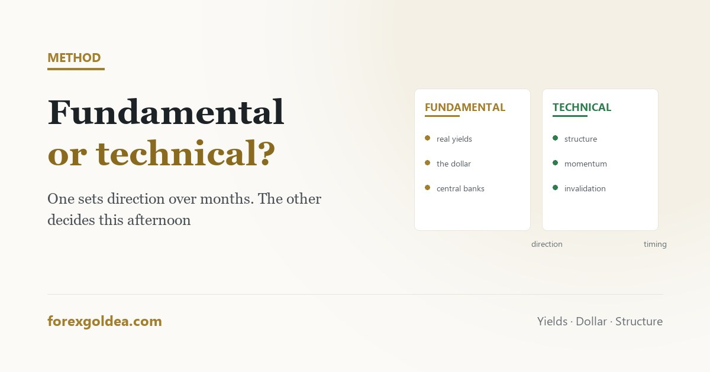

Fundamental or technical? Gold answers to both, at different speeds

The argument between fundamental and technical analysis is usually presented as a choice of camp, which is a strange way to frame two tools that answer entirely different questions. On gold in particular, the honest position is that one of them explains why the market is going somewhere, and the other helps you decide when to get on — and neither substitutes for the other.
In short Fundamental analysis asks why gold should be repriced — real interest rates, the dollar, inflation expectations, central bank buying, risk sentiment. Technical analysis asks what price is doing now and where participants have reacted before. Gold is unusually responsive to fundamentals because it produces no earnings and no yield, so its price is almost entirely a function of what holding it costs relative to alternatives. Technicals decide timing and risk placement. The common mistake is using one to argue against the other — a chart level does not overrule a rate decision, and a macro view does not tell you where to put a stop.
What each one actually claims
Fundamental analysis claims that an asset has drivers, and that changes in those drivers should change its price. For gold that means real interest rates, the strength of the dollar, inflation expectations, central bank purchases and demand for safety. The claim is about direction and magnitude over weeks and months, and it is agnostic about the path.
Technical analysis claims that price action contains information about participant behaviour: where buyers previously stepped in, where sellers defended, whether a move is accelerating or fading. It says nothing about what gold is worth, and it does not pretend to.
Stated plainly, they are not competitors. One is a thesis about value. The other is a description of behaviour. A trader can hold both without contradiction, and most consistent ones do.
Why gold leans fundamental
Gold has no earnings, no dividend and no coupon. A company can be analysed on cash flows; a currency pair reflects two economies against each other. Gold's price is close to a pure expression of one question: what does it cost to hold something that yields nothing, compared with the alternatives?
That is why real yields matter so much. When inflation-adjusted returns on government bonds rise, holding gold becomes relatively expensive and demand falls. When they fall, the opportunity cost disappears and gold becomes more attractive. The dollar leg works alongside it, since gold is priced in dollars and a weaker dollar mechanically supports the price.
The practical consequence for a trader is that gold's larger moves usually have an identifiable cause — a rate expectation shifting, a risk event, a central bank programme — and those causes take weeks or months to play out. The full picture is in what moves the gold price.
Where technicals genuinely earn their place
Knowing that gold should be supported over the next quarter tells you nothing useful about this afternoon. The macro thesis has no opinion on whether to buy now or after a $30 pullback, where the idea would be proven wrong, or how much to commit.
Those are the questions charts answer well:
- Timing. Entering in the direction of a thesis after a pullback rather than into an extended move.
- Invalidation. A level that, if broken, means this particular expression of the idea has failed — the basis of stop placement.
- Context. Whether the current move is fresh or stretched, which is the useful job of momentum tools and moving averages.
- Structure. The prices at which participants have repeatedly reacted, which is where risk is cheapest to define.
None of that requires believing charts predict anything. It only requires accepting that other participants are watching the same levels, which is observably true.
The timescale split
| Horizon | What mostly drives it | What is useful |
|---|---|---|
| Minutes to hours | Order flow, liquidity, scheduled releases | Technical structure; a news calendar to stay out of the way |
| Days to weeks | Positioning, momentum, sentiment | Both, with technicals leading on execution |
| Months to years | Real yields, dollar, central bank demand | Fundamentals; charts add little at this range |
The table explains most of the disagreement between the two camps. People argue past each other because they are trading different horizons and each is right about their own.
The combination that works, and the trap
A workable process is boring and sequential: form a directional bias from the macro picture, then take entries in that direction only when structure offers a level where risk can be defined tightly, and stand aside around scheduled high-impact releases where spreads widen and fills deteriorate.
The trap is using one discipline to overrule the other after the fact. It looks like this: a technical short is entered, price moves against it, and the trader begins reading macro commentary until an argument for holding appears. That is not analysis; it is a search for permission to abandon a stop.
If you only have time for one
For someone trading gold on a horizon of days or longer, a rough fundamental picture plus one technical filter beats detailed chart work with no macro awareness. Knowing that a major rate decision is due this week prevents more damage than any pattern recognition provides, and requires ten minutes rather than a discipline.
For someone trading intraday, the balance reverses — but only in the sense that the calendar becomes something to avoid rather than to trade around. Even there, the fundamental job is not analysis; it is knowing when to be flat.
Reader questions
What is the difference between fundamental and technical analysis?
Fundamentals study the drivers that should reprice gold; technicals study price behaviour and where participants reacted before.
Which is better for trading gold?
Neither alone. Fundamentals explain direction over weeks; technicals decide entry, stop placement and size.
Why is gold so sensitive to interest rates?
Gold yields nothing, so rising real yields make holding it relatively costly — and falling ones remove that cost.
Can technical analysis work if the fundamentals disagree?
Short term, often yes. Over months the fundamental driver usually reasserts itself, so alignment beats choosing sides.
Do I need to follow economic news to trade gold?
You need to know the schedule, not to trade it. Standing aside during major releases avoids the worst spreads and fills.
How do I combine both without contradicting myself?
Give each a fixed job before entering: fundamentals set direction, technicals set entry and stop. Never let one override an open stop.
Where this leaves you
Gold rewards a trader who holds both ideas at once: a macro view of why the metal should be repriced, and a chart view of where to express that idea with defined risk. The camps only conflict when one is asked to do the other's job — and the moment to notice that is when a losing position starts generating new analysis rather than reaching its stop.
Affiliate disclosure: we earn a commission when you open and fund an account through our partner links, at no extra cost to you.